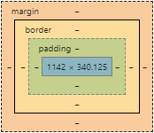

Hey, Zwee! What are you doing on the dinner table again? That’s my pizza on the pl.. - oh man! Your nose just totally touched my pizza! Anyway, if you want a piece of that, you need to learn a little lesson from my EDA adventures! You’re a clever cat, I didn’t get you those glasses for nothing!
I know you love websites, I can tell by the fact that you’re always choosing your chillout-spot to be right in front of my keyboard, in front of the screen!
Anyway, did you know that all the elements that live on a page have their own cushioning of sorts? Nowhere near as fluffy as your cat-bed, but… come to think of it, you can make some elements’ cushioning very fluffy! But since you’re on the table right now, I can totally show you how layouts of websites work by looking at our dinner table!
First, have a look at this little model here (not cat-friendly): 
I have a pizza on my plate. My plate itself is on the table. If we say my pizza is the element’s content, then the space between the crust and the edge of the plate is the padding. The bigger the plate, the more the pizza stands out! If I change the shape of my pizza (by giving you a little piece after this), the plate will still stay the same shape! Here, it’s round, but on a website, it’s a rectangular shape. Same goes for an element on a page. Depending on how thick the plate’s edge is, that is the border. It usually is quite thin, barely a line to separate the plated content from the plate’s position on the table. How close is my plate to the next ‘box’, for example a glass of water? How far away from the edge of the table? (Never too close, though, as I know how much you love knocking things off the edge!)
Do you think you’ve learned enough to deserve a little piece of base?